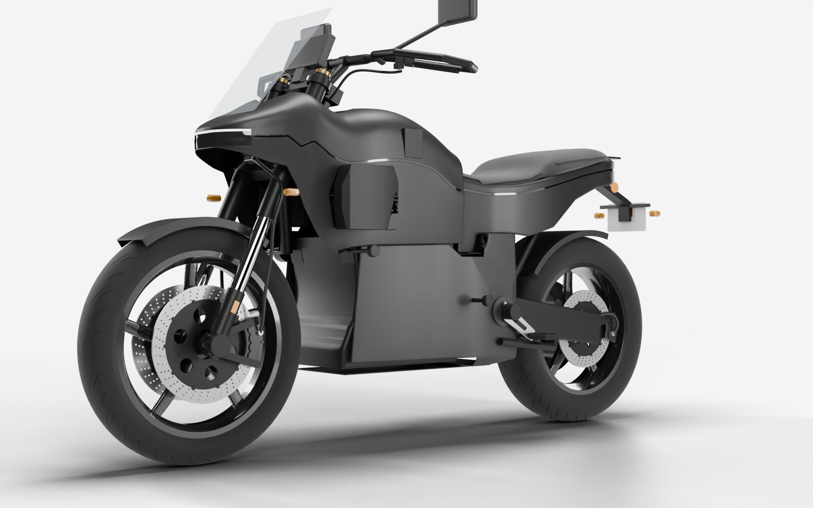
| 01 | Executive summary | 3 |
| 02 | Specification sheet | 4 |
| 03 | How the design got here, target and mass | 6 |
| 04 | Architecture | 8 |
| 05 | Validation, structures | 12 |
| Thermal | 13 | |
| Aerodynamics (pending) | 14 | |
| Vehicle dynamics | 15 | |
| Drive and performance | 16 | |
| Electrical | 17 | |
| 06 | Mass, budget against actual | 18 |
| 07 | Cost | 19 |
| 08 | Compliance and safety | 21 |
| 09 | Verification plan (DVP&R) | 23 |
| 10 | Targets T1 to T10, verdicts | 24 |
| 11 | Roadmap, V1.1 and beyond | 25 |
| 12 | Status and limitations | 26 |
| 13 | Appendix A, concept drawing pack | 27 |
| Appendices B and C, BOM and document index | 32 |
This dossier describes the Bavuso V1 electric adventure-touring motorcycle as a design. It covers what the bike is, why it has these numbers, how it was analysed and what the analysis does not prove. It is a design freeze at Rev E, November 22, 2026.
Bavuso Motors prepared it. AI engineering agents (Claude) carried out the engineering analysis under my direction.
Numbers carry one of four labels: measured, supplier, calculated or estimate. No part has been weighed and nothing has been tested, so no value comes from hardware. The single source for every number is program/00-V1-final-spec.md.
I chose a buildable bike: about 258 kg / 569 lb, a 23.8 kWh pack, about 150 miles at 70 mph, 125 mph sustained and native NACS fast charging. It is a V1 with a planned improvement path (section 11): better cells, lower drag, a lighter chassis and, later, a two-up variant.
V1 is a solo adventure-touring motorcycle. It has a Molicel P60B 21700 pack (100s11p, 1,100 cells) in a structural aluminium case that forms the lower body, an EMRAX 228 axial-flux motor with a Cascadia CM200DX inverter, and a single 8 mm Gates belt at 3.60:1. The frame is steel tube with cast nodes and a steel pivot yoke, with a cast single-sided swingarm. V1 is level with the Energica Experia (260 kg) and about 4% heavier than the Zero DSR/X (247 kg). It carries about 38% more energy than the DSR/X.
The design is coherent and checked on paper. The parts ledger, the bill of materials and the CAD roll-up agree on 257.9 kg, and structures, thermal, dynamics, drive, electrical and cost models were run on it. Nothing is built, weighed or tested, supplier prices are estimates, and several margins are thin (mass headroom 2.1 kg, range break-even at CdA about 0.407). The aerodynamic result is still pending. Sections 10 and 12 give the verdict on each target and the limits.
| Quantity | Value | Type |
|---|---|---|
| Wet mass, no rider | 257.9 kg / 569 lb (headroom 2.1 kg against T1 of 260 kg) | calculated |
| Centre of gravity (bike) | 787 mm ahead of the rear axle, 529 mm high | calculated |
| Wheelbase / seat height | 1,490 mm / 832 mm | measured (CAD) |
| Pack | Molicel P60B 21700, 100s11p, 1,100 cells, 108.0 kg | supplier / estimate |
| Pack energy / voltage | 23.76 kWh gross, 21.4 kWh usable (5-95%); 360 V nominal (250-420 V) | calculated |
| Motor / inverter | EMRAX 228 liquid-cooled, LV+43% winding, 220 Nm, 13.2 kg / Cascadia CM200DX, 300 A rms continuous, 6.75 kg | supplier |
| Peak / continuous power | 124 kW peak (350 A DC cap: 109 / 100 / 93 / 87 kW at 50 / 20 / 10 / 5% charge, 25 C) / 61.6 kW continuous | supplier cap / calculated |
| Final drive | Gates 8MGT-1760-62 belt, 62 mm, 35T / 126T, 3.60:1 | supplier / calculated |
| 0-60 mph | 4.15 s (4.44 s with 25 kg luggage; 5.47 s on a wet road) | calculated |
| 0-100 km/h / 0-100 mph / 60-100 mph | 4.31 s / 7.26 s / 3.12 s | calculated |
| Top speed | 135 mph limit (6,500 rpm), governed at 130 mph; 125 mph needs 43.5 kW at the wheel | calculated |
| CdA | 0.38 m² assumed (aero pending) | assumption |
| Range at 70 / 77 mph | 152.4 / 132.2 mi (flat, still air, 90 kg rider, 25 C). Real-world about 15 to 20% lower; fails T3 above CdA about 0.407 | calculated |
| DC charging 10-80% | about 21 min at 25 C, 2C cell cap (23.0 min at 35 C, 25.4 min at -10 C with heater, 40.9 min at 45 C) | calculated |
| AC charging / NACS | BROGEN PV1776 6.6 kW (3.1 h for 10-90%); native J3400 inlet, DIN 70121 / ISO 15118 controller. Supercharger access not established | supplier / design |
| Brakes | 320 x 5 mm front discs, 267 x 5 mm rear disc; front discs 362-375 C in a 125-0 mph stop (limit about 450 C) | measured (CAD) / calculated |
| Frame / swingarm | Steel-tube frame, cast steel nodes, steel pivot yoke (cross-member Z545), cast A356 single-sided arm | measured (CAD) |
| Wheels | Carbon, 2.6 kg front and 3.3 kg rear | estimate |
| Steering damper | Speed-scheduled semi-active, about 0.5 kg | calculated / estimate |
| Unit cost | $29.5k at 10k/yr; $39.3k at 1k; $58.0k at 100 ($32.3k at 10k if cells, motor and inverter stay at 1k prices) | estimate |
| Design rider case | 90 kg rider + 25 kg luggage, 1,755 mm (about the adult male average) | assumption |
| Validation plan | about $7.04M and 28 months, all planned | estimate |
Measured means from CAD geometry or a weighed part (no part is weighed). Supplier means a published datasheet or catalogue. Calculated means computed by the program’s scripts or hand checks. Estimate and assumption mean judgement.
| Bavuso V1 | Energica Experia | Zero DSR/X | BMW R 1300 GS | |
|---|---|---|---|---|
| Wet mass | 257.9 kg / 569 lb | 260 kg / 573 lb | 247 kg / 544 lb | 237 kg / 523 lb (fuelled) |
| Energy (gross) | 23.76 kWh | 22.5 kWh | 17.3 kWh | Petrol, 19 L |
| Rated range | 152.4 mi at 70 mph (calculated, assumed CdA) | 130 mi at about 68 mph claimed; 120 real | 85 mi at 70 mph claimed; reviewers 70-100 | n/a |
| Peak power | 124 kW | not retrieved | 75 kW (100 hp) | n/a |
| Top speed | 135 mph limit, governed 130 | not retrieved | 112 mph | n/a |
| Charging | Native NACS (J3400); DC 10-80% about 21 min | CCS inlet | No DC fast charge | n/a |
| Price | target MSRP about $45k; unit cost $29.5k at 10k/yr | UK GBP 25-28k | $22,995 | n/a (petrol) |
| Status | Paper design, nothing built | On sale | On sale | On sale |
Competitor figures come from published maker pages and independent reviews, summarised in 01-targets.md. Several sources conflict, and rated ranges are measured at different speeds, so the columns are not like-for-like. V1 figures are calculations.
A 400 lb bike would be about 100 lb lighter than the Zero DSR/X but would carry only 11 kWh, enough for about 74 miles at highway speed. A premium bike should not be out-ranged by a cheaper one. So V1 gives up the 400 lb goal and keeps the range.
My brief asked for a bike under 400 lb with 200 miles at 70 mph, 125 mph or more, native NACS charging and comfort in a 77 mph gust. The first job was to test whether those targets can coexist. They cannot with today’s cells (about 230 Wh/kg at pack level).
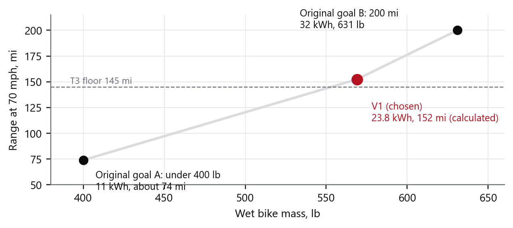
01-targets.md; the line only joins them.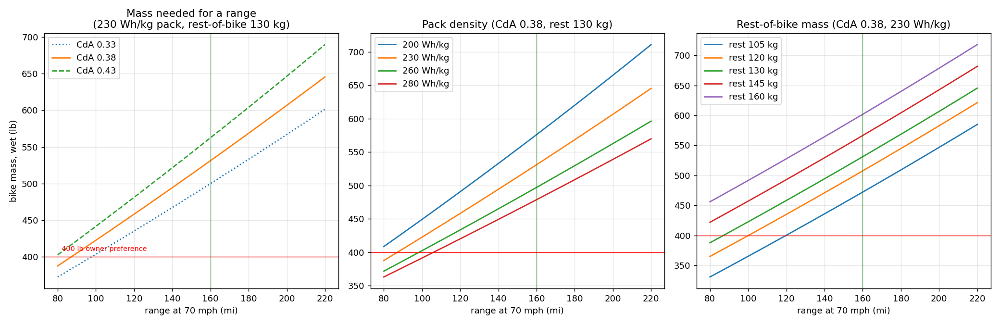
program/data/target-sweep.png): the bike mass needed for a given 70 mph range, for different drag, pack density and rest-of-bike mass.Gate A locked a 23.8 kWh pack, a solo rider and ten targets (T1 to T10, section 10). The mass target started at 240 kg and was re-baselined twice as real parts replaced the first budgets (next page).
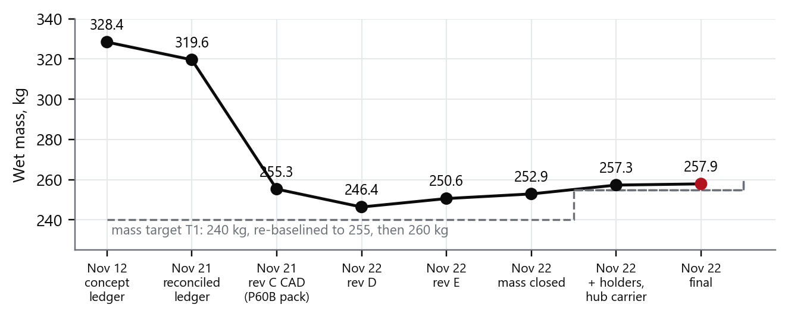
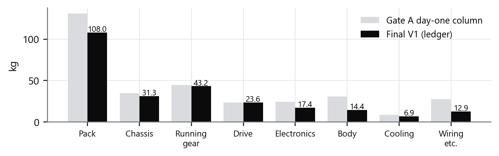
| Date | Decision | What and why |
|---|---|---|
| Nov 21 | Inverter | Cascadia CM200DX (6.75 kg) drives the EMRAX 228 LV winding; the lighter emDrive H100 gives only about 29 kW continuous on a 360 V pack. Belt ratio 3.60, 8 mm Gates belt. |
| Nov 21 | Hot day | 125 mph sustained at 25 C; on a 38 C day full speed for about 10 min, then a derate to about 105 mph. No chiller; keep the 3 kW heater and pre-heat on the way to a charger. |
| Nov 22 | Mass re-baseline | A steel pivot yoke (single-sided arm, belt on the other side) and real catalogue running gear raised the roll-up; T1 re-set from 240 to 255 kg. |
| Nov 22 | Final mass | BOM audit found cell holders (3.1 kg) and the arm’s hub carrier (1.1 kg) missing: 257.9 kg, T1 now at most 260 kg. |
| Nov 22 | Steering damper | Speed-scheduled semi-active damper; without it the model wobbles from 15 to 85 mph. |
| Nov 22 | Look frozen at rev E | Pods 55 mm proud, no R15 on the lower body and a second flank line go to V1.1. |
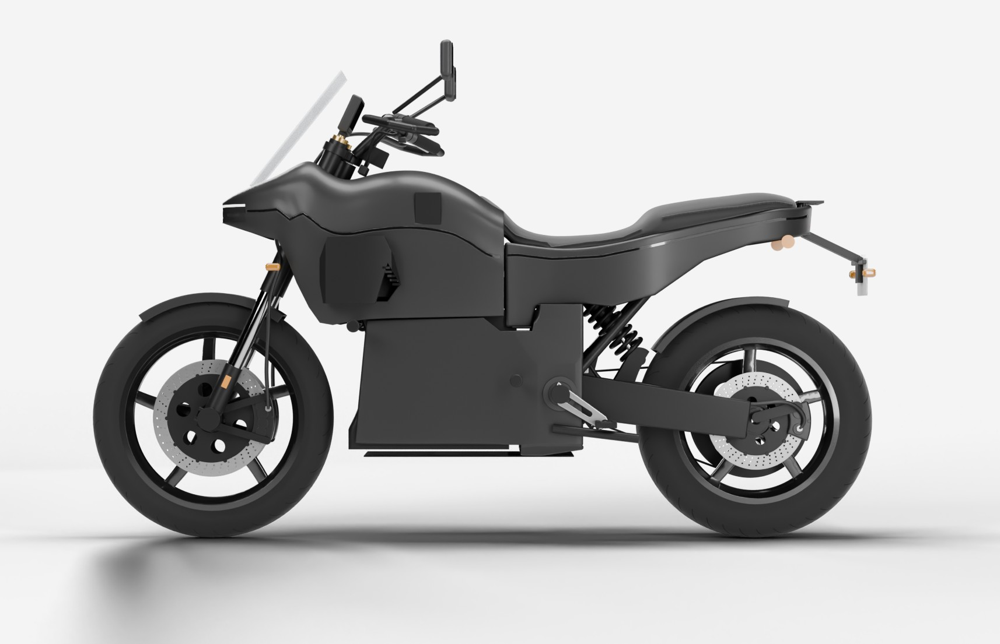
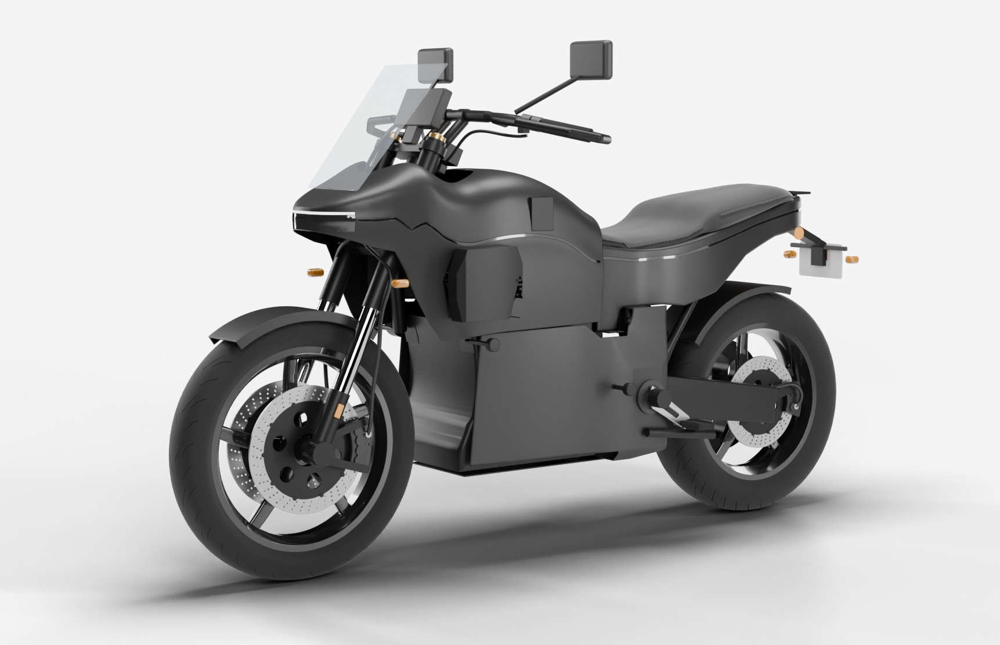
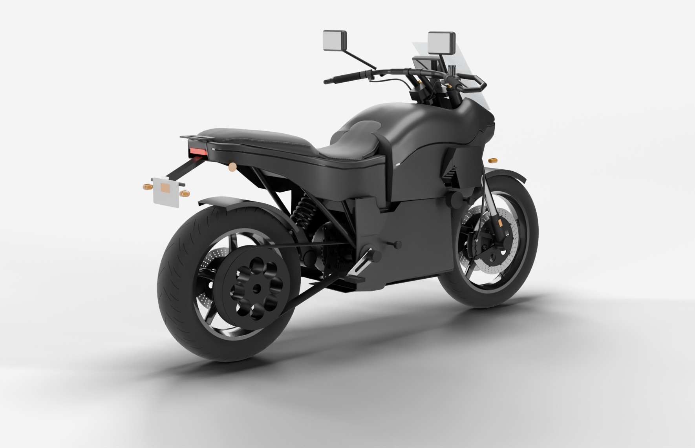
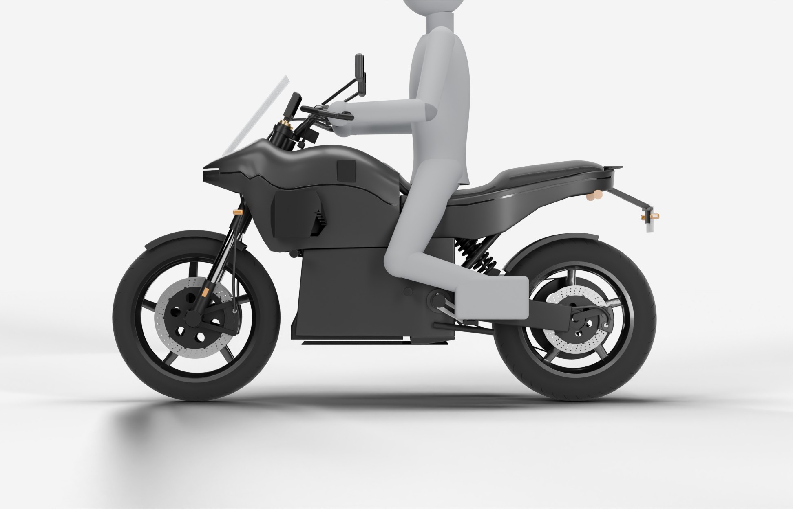
The look is frozen at rev E: beak, slim light band, clear screen, narrow waist, sculpted saddle and matte black, with one continuous lower body formed by the pack case. Three items move to V1.1. The radiator pods stand 55 mm proud of the flank, the lower body has no R15 edge radii yet, and the second flank line is not built. The CAD is an envelope model. It passes 91 of 91 geometry and regulatory-envelope checks, but it lacks many small parts (wiring, hoses, cell holders, lid) and two generator fixes.
The solo seat sits at 832 mm on a 1,490 mm wheelbase. The centre of gravity is 787 mm ahead of the rear axle, 529 mm high, with a front/rear split of 52.8 / 47.2 percent (no rider). Mass sits low because the pack is the largest single block and its structural case forms the lower body.
| Item | Value |
|---|---|
| Cells | Molicel INR-21700-P60B, 100s11p, 1,100 cells x 75 g = 82.5 kg |
| Energy / voltage | 23.76 kWh gross, 21.4 kWh usable (5-95%), 360 V nominal, 250-420 V |
| Mass | 108.0 kg: cells 82.5, case 7.9, internals 14.5, cell holders 3.1 |
| Case | 3 mm aluminium tub with a 5 mm front wall, forming the lower body; four 25s11p lane modules; PA66-GF30 cell holders |
| Charging | DC 10-80% about 21 min at 25 C (2C cell cap, 12 A per cell, about 137 A at the pack) |
| Safety | Per-cell wire-bond fuses, slotted ribbons, burst vents (490 mm² per parallel group), coolant loop; propagation passes only with coolant flowing (screening model) |
| Item | Value |
|---|---|
| Motor | EMRAX 228 liquid-cooled, LV+43% winding (the only winding that makes full power at 360 V; draws 650 A rms), 220 Nm, 124 kW peak, 13.2 kg |
| Inverter | Cascadia CM200DX, 300 A rms continuous / 740 A rms peak, 6.75 kg |
| Final drive | Single Gates 8MGT-1760-62 belt, 62 mm wide, 35T / 126T = 3.60:1, centre distance 545.9 mm; belt-to-tyre gap 12.0 mm against a 12 mm limit |
| Performance | 4.15 s 0-60 mph; 135 mph limit governed at 130; 61.6 kW continuous (inverter-limited) |
| Drive mass | 23.65 kg |
The belt on one side and a single-sided arm on the other is the hard structural problem, because the belt pulls the wheel forward 274 mm away from the arm. Section 5 shows how the steel pivot yoke carries that load.
| System | kg | Share |
|---|---|---|
| Battery pack | 108.0 | 42% |
| Chassis | 31.33 | 12% |
| Running gear | 43.23 | 17% |
| Drive | 23.65 | 9% |
| Electronics | 17.44 | 7% |
| Body and protection | 14.45 | 6% |
| Cooling | 6.9 | 3% |
| Wiring, fasteners, fluids | 12.93 | 5% |
| Total | 257.92 | 100% |
| Item | Value |
|---|---|
| Frame | Steel-tube frame (25CrMo4 class), TIG-welded; rail 38 x 2.25, down-link 38 x 4.0 to 4.25, cast steel nodes at the head and pivot |
| Pivot yoke | Steel yoke with cross-member at Z545; legs 2.43 kg + cross-member 2.23 kg; pivot bearings 2 x 32012 X. It closes the belt loop inside the motor-and-arm structure, so belt tension does not go through the frame |
| Swingarm | Cast A356 aluminium single-sided arm with a cast hub carrier; about 5.7 kg for the full arm (in line with production single-sided arms) |
| Chassis mass | about 31 kg (frame 17.0 + yoke 8.7 + arm 4.1 + hub carrier, pads, bearings, allowances); the original budget was 18 kg |
| Suspension | Fork and monoshock (catalogue class, 6.8 kg fork); speed-scheduled semi-active steering damper, about 0.5 kg |
| Wheels, tyres | Carbon wheels 2.6 kg front and 3.3 kg rear (estimates); 110/80R19 and 150/70R17, V-rated (149 mph against a 130 mph governor) |
| Brakes | Two 320 x 5 mm front discs with Stylema-class calipers, 267 x 5 mm rear disc, ABS |
The Gate A budget of 18 kg assumed a conventional frame. Fatigue, not peak strength, sets the tube walls. The arm must be cast, not welded, and the belt on one side forces a load-bearing yoke. That gives about 31 kg, which I accepted as part of the V1 compromise (T1 re-baselined). An aluminium yoke with a redesigned section is one of the V1.1 weight levers.
| Item | Value |
|---|---|
| HV bus | 360 V nominal pack; 350 A DC cap; four GX14 contactors (350 A carry); 450-A class fuse in the service disconnect; 500 A pyro; cables 50 mm² DC bus, 35 mm² inlet, 70 mm² motor phases |
| Charging | Native J3400 inlet, DIN 70121 / ISO 15118 controller; BROGEN PV1776 6.6 kW on-board charger (3.0 kg); 150 kW-class DC stations |
| BMS and control | Orion BMS2-class BMS (not an ISO 26262 certified part), VCU, CAN network |
| Electronics mass | 17.44 kg (budget 17.5) |
elec-diagrams.py).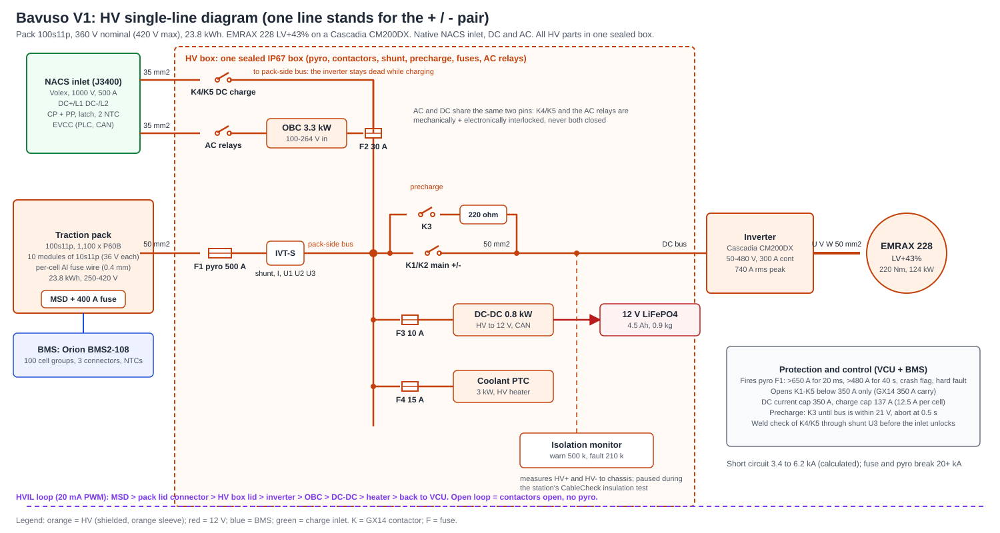
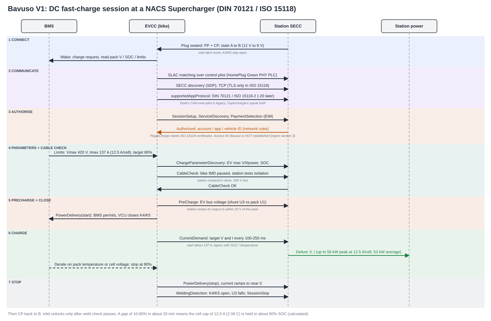
The solo load cases (90 kg rider + 25 kg luggage) carry belt preload: static 1 g, 3 g bumps, 1.1 g braking, 45-degree lean in both directions, belt design pull 11.3 kN, launch and regen torque, pack inertia (20 g longitudinal) and crash slider loads. Fatigue uses IIW nominal stress over a 160,000 km road spectrum plus drive events, with a Miner sum D of no more than 0.5.
| Check | Safety factor / D | Required | Verdict |
|---|---|---|---|
| C6 rear bump 3 g (cross brace) | 1.23 | 1.2 | Pass, thin |
| D1 belt design pull (arm, beam model) | 1.19 (shell model about 1.25) | 1.2 | Marginal |
| C9c rear slider 21 kN | 1.08 | 1.0 | Pass, thin |
| C9b front slider | 1.18 | 1.0 | Pass |
| Fatigue, down-link at headstock | D 0.57 | 0.5 | Fail |
| Fatigue, upper rail 1 | D 0.57 | 0.5 | Fail |
| Torsion / lateral stiffness at head | 5.0 kNm/deg / 1.68 kN/mm | 3 / 1.5 | Pass |
The fix is estimated, not re-run. The down-link goes from 38 x 4.0 to 38 x 4.25 (+0.13 kg), upper rail 1 from 38 x 2.25 to 38 x 2.5 (+0.20 kg) and the swingarm wall from 4.0 to 4.25 (+0.11 kg). That adds about 0.45 kg, to be confirmed at 12 mm before release. Those edits are not in the 257.9 kg roll-up.
FEA Round 3 re-ran the full frame and arm at the final 257.3 kg plus rider and luggage, with the yoke at its built position. Strength and fatigue pass after +0.45 kg of wall increases that were sized by scaling, not re-run. Several factors sit at 1.2 to 1.26 against 1.2. The model uses rigid bosses, nominal-stress welds and an assumed fatigue spectrum. It has no buckling or crash plasticity, no motor mount or torque reaction, and no cell-backed crush analysis. EMRAX has not confirmed the motor housing’s role in the yoke. Fatigue of the carbon wheels, fork and axles was not analysed.
A lumped-parameter network covers the hottest cell, pack, motor, inverter and charger, with a radiator and fan model, over duty cycles from 25 C to 45 C and at -10 C. A 2-D screening model checks cell-to-cell propagation. There is no CFD and no bench data.
| Case | Result | Limit | Verdict |
|---|---|---|---|
| 125 mph, 25 C, 95 to 5% charge (27.5 min) | cell core 50.7 C; motor inlet coolant 45.9 C; winding 86 C | 55 C BMS / 60 C cell; 50 C inlet; 100 C winding | Pass |
| 130 mph governed, 25 C | core 53.2 C, inlet 47.5 C, winding 91 C | same | Pass |
| 125 mph, 38 C | inlet limit after 10.6 min, core 55 C after 17.2 min | same | Derate to about 105 mph |
| Mountain riding, 38 C | core 50.9 C, inlet 50.2 C | 55 C / 50 C | Pass, at the limit |
| DC 10-80%, 25 C / 35 C | 21 min / 23.0 min | 25 min | Pass |
| DC 10-80%, 35 C, arriving hot (42 C) | 27.4 min | 25 min | Fail by 2.4 min |
| DC 10-80%, -10 C, 3 kW heater | 25.4 min (14.0 min pre-heated) | 25 min | Marginal |
| Cell failure propagation | no spread with coolant flowing; 134-249 C neighbour with no coolant or worst case | 170 C | Only with coolant |
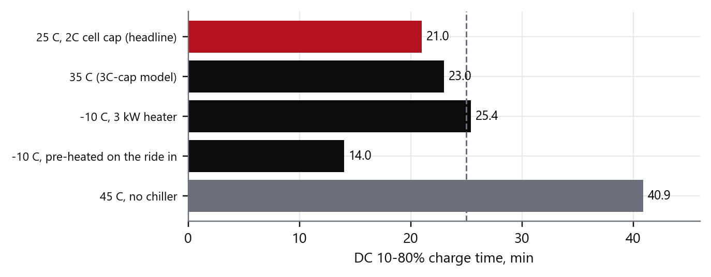
The model is lumped, with an assumed ram-air factor of 0.25 and assumed core conductance. Two models disagree on the 25 C pack core (46 vs 50.7 C). There is no chiller, so hot days derate. The propagation result is a screen, not UN R136 testing. The charge life of the P60B above 2C is not on the datasheet (v0.1), so I do not claim the faster figures.
A CFD case on the rev E geometry (rider and bike) is running. No converged result exists, so this section carries an assumption, not a finding. The independent review noted that an earlier outside review found a 7% change in CdA across mesh refinement (0.413 to 0.385) against a 2% goal. That item is still open.
| Quantity | Value at assumed CdA 0.38 | Note |
|---|---|---|
| Range at 70 mph | 152.4 mi | 146 Wh/mi |
| Range at 77 mph | 132.2 mi | 169 Wh/mi |
| Range at 125 mph | 56.9 mi | |
| Wheel power at 125 / 130 mph | 43.5 / 48.7 kW | continuous power 61.6 kW |
| Range at CdA 0.43 (70 / 77 mph) | 138.8 / 119.8 mi | plausible range from the outside review: 0.385 to 0.423 |
| T3 break-even CdA | about 0.407 | T3 (at least 145 mi at 70 mph) fails above this |
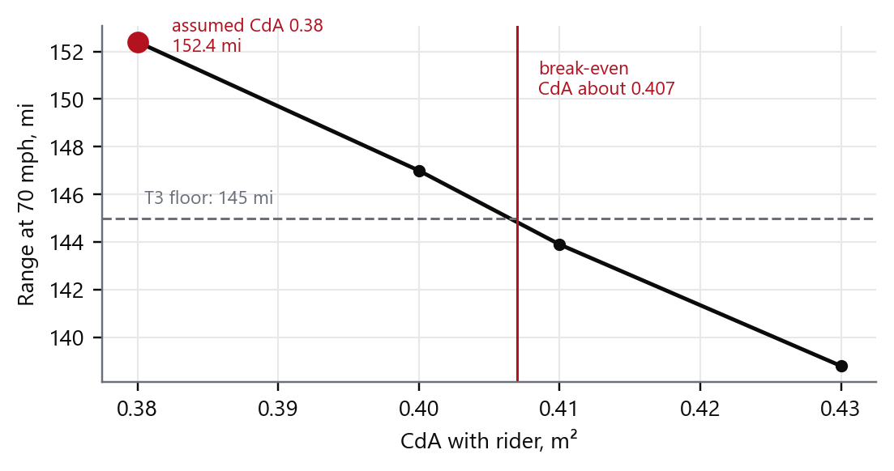
| Item | Result | Criterion | Verdict |
|---|---|---|---|
| Wobble and weave, scheduled damper | weakest damping 0.028 (luggage case) | positive (T8) | Pass, thin |
| Stop from 60 / 77 mph at 1.0 g | 39.4 / 63.8 m | inside UN R78 | Pass |
| Stoppie limit / wheelie at launch | 1.14 g / no wheelie (0.70 g vs 1.10 g limit) | above 1.0 g | Pass |
| Front disc, 125-0 mph | 362 / 375 C | 450 C | Pass |
| Front disc, three 0.6 g stops | 444 / 460 C | 450 C | Marginal |
| Lean clearance, pegs | 45.2-45.6 degrees | 45-50 degrees | Pass |
| Lean, belt-side pulley flange | 48.6 degrees after the flange moved 181 to 177 mm | pegs + 3 degrees | Exactly at the rule |
| Sidewind 10 m/s at 77 mph | lean 9.7 degrees, 5 Nm on the bars | 10 Nm screen | Pass, assumed CoP |
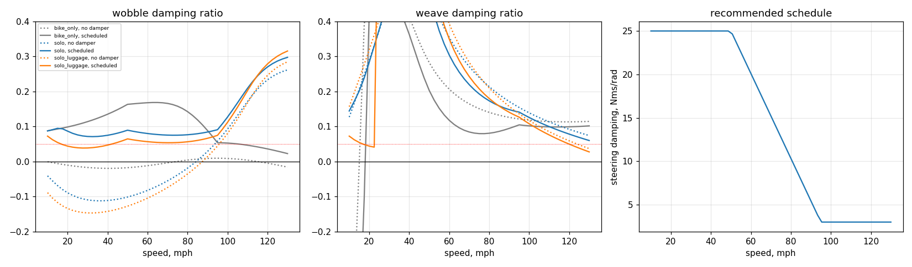
damper-schedule.png).The model ran on rev D at 247.9 kg and was not re-run on rev E (the 177 mm pulley flange gives exactly the “pegs + 3 degrees” rule). The rider is rigid and hands-off. Fork stiffness, tyre properties, damping and the gust centre of pressure are estimates. There is no comfort or buffeting analysis. A failed damper (unscheduled state) is a safety case, now in DFMEA D48 and test V53.
| Quantity | Final V1 | Note |
|---|---|---|
| 0-60 mph | 4.15 s | 4.44 s with 25 kg luggage; 5.47 s on a wet road (mu 0.7); torque-limited |
| 0-100 km/h / 0-100 mph | 4.31 s / 7.26 s | SOC 90, 25 C |
| 60-100 mph roll-on | 3.12 s | |
| Top speed | 135 mph limit | 6,500 rpm limit, not power; governed at 130 mph |
| Wheel power at 125 / 130 mph | 43.5 / 48.7 kW | 2.4x power margin at 125 mph |
| Peak / continuous power | 124 kW / 61.6 kW | continuous is inverter-limited and below 56 kW under 103 mph |
| Range, 70 / 77 / 125 mph | 152.4 / 132.2 / 56.9 mi | at CdA 0.38 (assumed) |
| DC charge 10-80% | about 21 min | 25 C, 2C cell cap, 51 kW average |
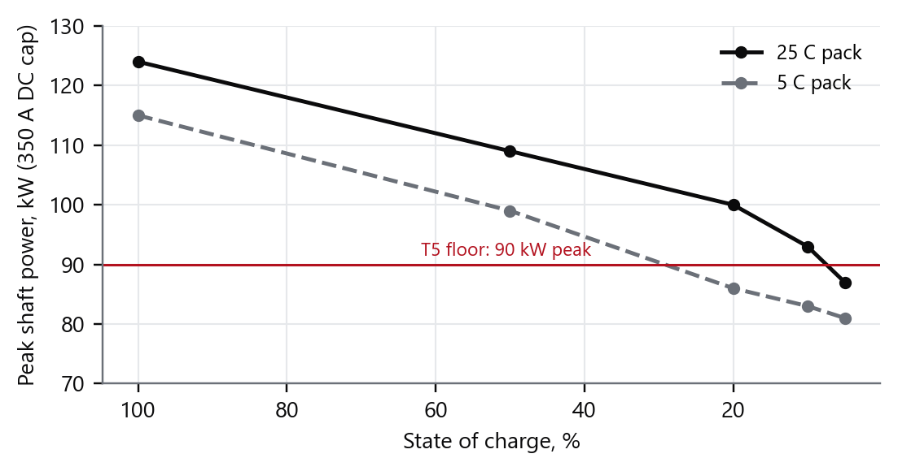
Motor iron loss, the efficiency map, pack resistance and 300 W of auxiliaries are estimates, and the road is flat with still air. The EMRAX torque curve beyond its 5,500 rpm datasheet corner is a fitted model, and Gates rates the belt to 4,000 rpm (extrapolated to 6,262 rpm). The hand model in 07 gives 96 kW at 10% charge and the drive model gives 93 kW. Nothing here is verified by test.
| Item | Result |
|---|---|
| Pack | 100s11p of P60B: 1,100 x 21.6 Wh = 23.76 kWh; 360 V nominal; 66 Ah |
| Motor and inverter match | Only the LV+43% winding makes full power at 360 V (650 A rms). The emDrive H100 gives about 29 kW continuous, so the Cascadia CM200DX was chosen at +3.25 kg (continuous power 61.6 kW, inverter-limited) |
| DC cap and protection | 350 A cap; GX14 contactors 350 A carry; 450-A class fuse (a 400 A fuse would sit at 0.88 of rating against a 1.3x no-blow rule); fuse I2t against the busbar and cell-bond withstand is not checked |
| Cables | DC bus 50 mm² (212 A bundled against 187 A worst continuous); inlet 35 mm² (161 A against 137 A charge current); motor phases 70 mm² or 2 x 35 mm² (about +0.3 kg not yet booked in the ledger) |
| Charging | 12.5 A per cell (2.08C, 137 A) gives 10-80% in about 20-21 min; 5C maximum on datasheet v0.1, no cycle life above 2C. AC 6.6 kW: 3.1 h for 10-90% |
| NACS | J3400 inlet and DIN 70121 / ISO 15118 charge controller are a design; Supercharger access and Plug and Charge are not established |
| Mass / cost | 17.44 kg electronics; about $5.9k electrical parts at 10k |
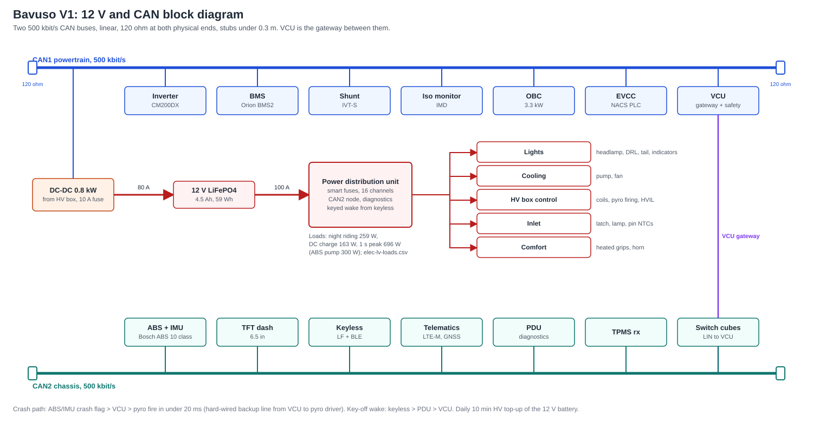
elec-lv-can.svg).No supplier has confirmed performance at the actual 360 V bus. The P60B fast-charge life is unconfirmed, and a 2C cap reduces that risk without retiring it. The BMS limits, regen and ABS blending, NACS handshake, charge derating, speed governor and damper schedule have no controls specification yet. The ledger and CAD still carry stale labels for the motor winding (“HV”, “MV”) and charger (3.3 kW).
program/data/mass-budget-report.csv, mass-rollup.json, parts-ledger.csv, bom-v1-reconcile.json.| System | Budget kg | Actual kg | Headroom kg | Headroom % | Growth-adjusted kg | Estimate share |
|---|---|---|---|---|---|---|
| Battery pack | 108.0 | 108.0 | 0.0 | 0.0 | 119.68 | 0.0% |
| Chassis | 31.5 | 31.33 | 0.17 | 0.5 | 34.76 | 10.0% |
| Running gear | 43.5 | 43.23 | 0.27 | 0.6 | 48.12 | 97.0% |
| Drive | 24.0 | 23.65 | 0.35 | 1.5 | 26.04 | 6.0% |
| Electronics | 17.5 | 17.44 | 0.06 | 0.4 | 19.52 | 47.0% |
| Body and protection | 14.5 | 14.45 | 0.05 | 0.4 | 16.61 | 42.0% |
| Cooling | 7.0 | 6.9 | 0.1 | 1.4 | 7.93 | 100.0% |
| Wiring, fasteners, fluids | 13.0 | 12.93 | 0.07 | 0.5 | 14.87 | 41.0% |
| Total | 260.0 | 257.92 | 2.08 | 0.8 | about 287 |
Estimate share is the ledger’s own flag per group. The pack shows 0% because its cells are supplier data, but the pack case and internals (about 25 kg) are estimates.
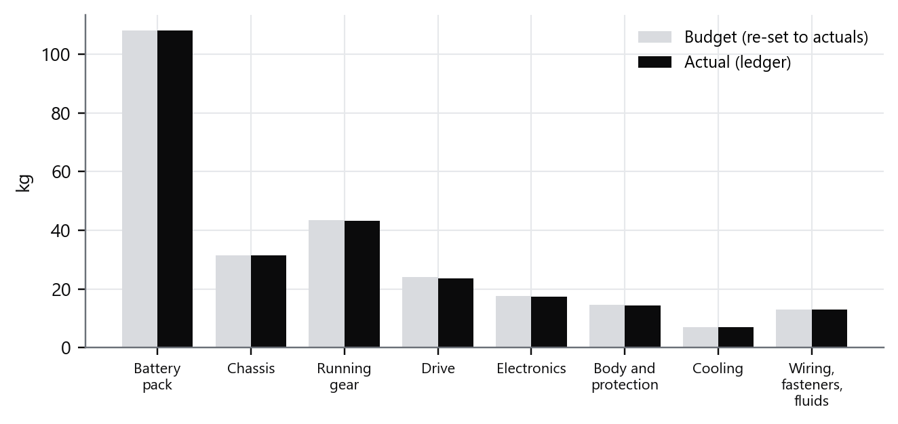
The bike CG is 787 mm ahead of the rear axle and 529 mm high, with a front/rear split of 52.8 / 47.2 percent. Unsprung mass is 13.5 kg front and 19.3 kg rear. By source, 0 kg is measured, about 110 kg is supplier data, 75 kg is calculated and 73 kg is estimated (28%). The ledger’s own growth rule (+15% on concept parts, +10% proposed) would give about 287 kg. That is a planning reference, not a forecast.
11-cost.md, cost-model-v1.csv and .json. Every price is an estimate; no supplier was contacted.| Per bike, USD | 100 / yr | 1,000 / yr | 10,000 / yr |
|---|---|---|---|
| Cells (1,100 x P60B) | 6,600 | 5,280 | 4,180 |
| Made parts (frame and yoke, cast arm, case, body, pulleys) | 4,934 | 3,018 | 2,234 |
| Purchased parts | 35,845 | 26,263 | 20,652 |
| Direct labour (pack + bike) | 2,520 | 1,035 | 446 |
| Plant overhead | 1,512 | 621 | 267 |
| Test, logistics, scrap, warranty | 4,118 | 2,321 | 1,521 |
| Tooling and capital (5-year amortised) | 2,508 | 735 | 207 |
| Unit cost, ex-works | 58,038 | 39,273 | 29,507 |
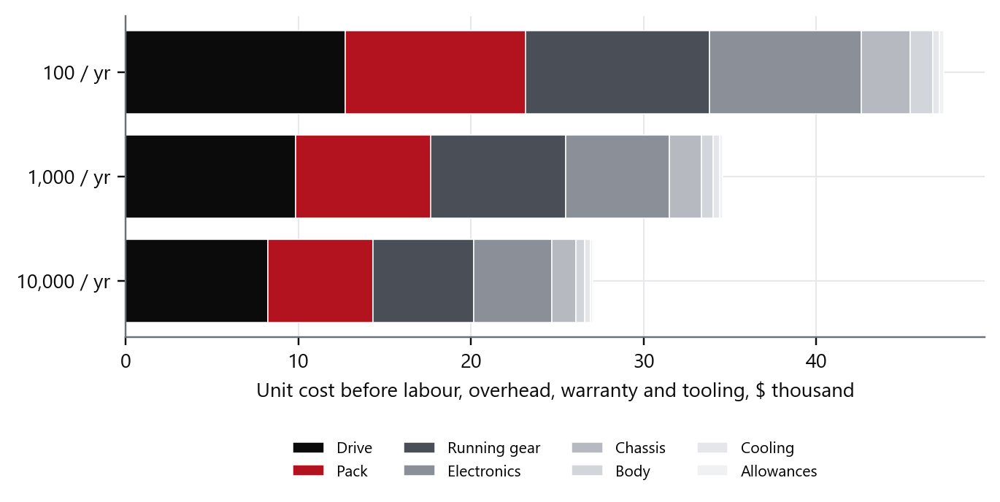
Unit cost excludes NRE, dealer margin, outbound freight, financing, working capital, Supercharger network access and certification fees beyond the NRE line. At a $45k MSRP the 10k unit cost is 66% of MSRP before dealer margin.
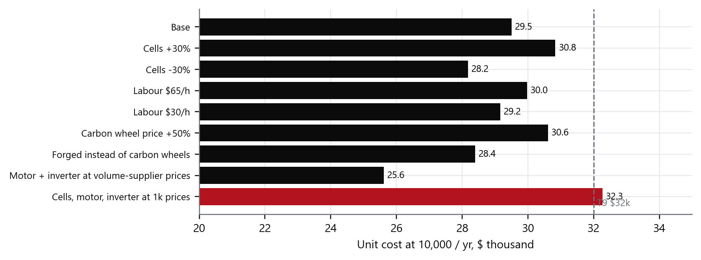
| Lever | Saving |
|---|---|
| Motor 4,800 -> 2,800 USD (volume axial-flux supplier) | 2,106 |
| Inverter 3,200 -> 1,500 USD (automotive inverter at volume) | 1,790 |
| Carbon wheels -> forged (about 1,050 USD set at 10k) | 1,106 |
| Cells 3.80 -> 3.10 USD (direct supply contract, about 143 USD/kWh) | 816 |
| Assembly labour 45 -> 30 USD/h (lower-cost plant location) | 351 |
| USD | 100 / yr | 1,000 / yr | 10,000 / yr |
|---|---|---|---|
| Tooling and capital (parts tooling, pack line, vehicle line, test rigs) | 1.25 M | 3.67 M | 10.36 M |
| NRE (engineering, specialists, prototypes, cell life, compliance) | 8.83 M | 17.30 M | 32.40 M |
The NRE is reused from an October startup-cost study, not re-derived. The verification plan (section 9) is about $7.04M and is not reconciled with it. The largest 10k tooling items are the pack line ($3.0M), the vehicle line ($3.5M) and frame jigs and robot cell ($1.0M).
P60B is $3.80 at 10k (about $176/kWh; no published P60B price). EMRAX 228 is $4,800 and CM200DX $3,200 at 10k, both low-volume specialists and estimates. The carbon wheel set is $2,100 at 10k (47% of a $4.5k retail anchor). Assembly is 7.5 h at $45/h plus 60% overhead.
V1 can be sold in the US with no emissions certification, but it has not been tested against a single standard. The US route is self-certification: the maker states the bike meets every applicable FMVSS and files with NHTSA. Nothing in the design blocks that. The EU route (type approval) is a separate, larger job and stays “later”. Everything below is on paper.
| Area | Rows | Met by design | Needs test | Open |
|---|---|---|---|---|
| US FMVSS and NHTSA paperwork | 15 | 4 | 2 | 9 |
| EPA / CARB | 3 | 0 | 0 | 3 |
| Battery | 7 | 0 | 6 | 1 |
| Charging | 7 | 2 | 3 | 2 |
| Functional safety | 4 | 0 | 0 | 4 |
| EU later | 9 | 0 | 0 | 9 |
| Total | 45 | 6 | 11 | 28 |
The battery carries the compliance risk. A 23.8 kWh, 108 kg pack needs UN 38.3 to ship, and its safety case (propagation, vents, crush) is the least proven part of the design.
Functional safety is a process, not a part. The BMS is not ISO 26262 certified, so a hazard analysis, ASIL targets and fault-injection tests are needed before any production claim. Supercharger access is separate from the NACS connector and is still open. The rev D/E CAD ran a 91-check envelope screen covering FMVSS 108, 111 and 123 geometry for lamps, mirrors and tyres. It is not a certification test.
48 rows: 15 High, 18 Medium, 15 Low. None has been tested. Two of the High rows (D24, D30) describe the earlier motor-housing yoke and are superseded by D47 (steel pivot yoke), so the list below leaves them out. Scores are engineering judgement on a paper design (AIAG-VDA style, S x O x D). Detection scores are poor because most controls are analysis only.
| ID | Item and failure | S | O | D | Test |
|---|---|---|---|---|---|
| D02 | Pack module barriers: Runaway spreads from one cell to neighbours | 10 | 5 | 7 | V02, V03 |
| D03 | Burst vents and plenum: Vent too small, blocked or not opening at 15-20 kPa | 10 | 4 | 7 | V02, V03 |
| D28 | Cast A356 arm, brace bolt-on: Fatigue crack at brace bolt-on (damage about 4 unreinforced) | 9 | 6 | 5 | V06, V31 |
| D01 | Cell (P60B 21700, 1,100): Internal short leads to thermal runaway of one cell | 10 | 4 | 6 | V01, V02, V04, V18 |
| D07 | Pack case front wall and seams: Seam or wall fails in a 20 g frontal crash (FEA 167 MPa vs 140 allowable at 4 mm) | 9 | 5 | 5 | V19, V20 |
| D17 | Active discharge (inverter bus): Bus takes about 88 s to fall below 60 V (inverter bleed 70 kohm) | 9 | 5 | 5 | V13 |
| D29 | Pivot bearings (right side 80 mm span): Overload or short life (43.6 kN in, 33.4 kN out at design; CAD span of 36 mm gives 85/74 kN) | 9 | 5 | 5 | V07, V31 |
| D32 | Tube welds (down-link, rails, headstock): Weld fatigue crack (Miner D 0.40-0.49 vs 0.5) | 9 | 5 | 5 | V31, V50 |
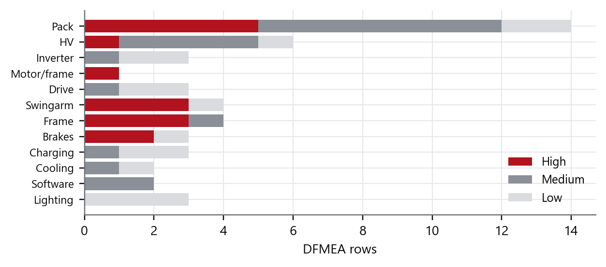
dfmea-v1.csv).The plan tests first what can kill the design cheaply: the steel yoke proof (V08), then the pivot rig (V07), cast-arm fatigue (V06), cell 2C charge life (V01, 26 weeks) and lane-module propagation (V02). A decision gate at week 14 confirms yoke, pivot, vent and brake size before the mules are built. UN 38.3 (V17) must finish before packs travel.
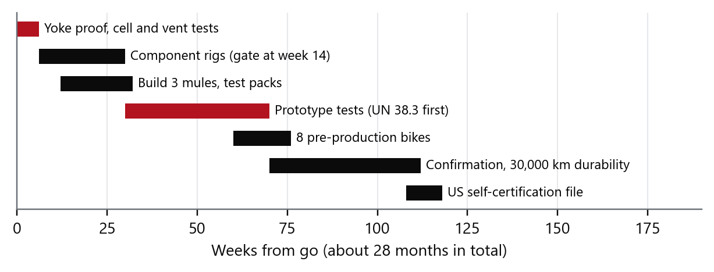
14-dvpr.md).| Phase | Cost |
|---|---|
| Component | $1,720,000 |
| Prototype (includes 3 mules, 12 test packs) | $3,366,000 |
| Pre-production (includes 8 bikes) | $1,990,000 |
| US total (three phases) | $7,076,000 |
| EU add-on (later, not in the headline) | $1,250,000 |
The headline is about $7.04M. The phase total here is $40k higher because it includes test V53 (steering-damper fail-safe), added on Nov 22. The plan is not reconciled with the $32.4M NRE in the cost model. Costs are planning figures scaled from an earlier study, not lab quotes.
| Target | Closing tests | Target | Closing tests |
|---|---|---|---|
| T1 mass | V38 (weigh every prototype), V06, V30, V31 | T6 charging | V22, V23, V34 |
| T2 pack safety | V01 to V05, V13 to V21, V26 | T7 load case | V30, V31 |
| T3 range | V35, V36 (coast-down, range) | T8 comfort, stability | V06, V07, V15, V30-V32, V39, V40, V42, V46, V47, V50, V53 |
| T4 125 mph | V33, V37, V09, V11, V25, V41 | T9 cost | no test; follows from quotes |
| T5 power | V10, V37, V08, V09 | T10 look | V44, V45 |
00-V1-final-spec.md and the independent review (19-independent-review.md).| # | Target | Verdict | Evidence |
|---|---|---|---|
| T1 | Wet mass at most 260 kg | Met, thin | 257.9 kg, headroom 2.1 kg; nothing weighed; 28% estimate; the ledger’s growth rule gives about 287 kg; group budgets were re-set to actuals |
| T2 | Pack 100s11p, 23.8 kWh, 360 V, at most 108 kg | Met | 23.76 / 21.4 kWh, 360 V, 108.0 kg (revised Nov 22 from 370 V / 103 kg). Met on analysis; cells are supplier data, case and internals are estimates |
| T3 | Range at least 145 mi at 70 mph | Met, thin | 152.4 mi at an assumed CdA 0.38 (aero pending); fails above CdA about 0.407; not verified |
| T4 | 125 mph sustained, governed 130 | Met, thin | 135 mph limit, 2.4x power margin; 25 C thermal passes in two models; at 38 C derates to about 105 mph; not verified |
| T5 | At least 90 kW peak, 55 kW continuous | Met, thin | 124 kW at high charge; 93 kW at 10% charge and 87 kW at 5% (25 C); 86 kW or less cold at low charge; continuous 61.6 kW, below 56 kW under 103 mph |
| T6 | Native NACS; DC 10-80% in 25 min or less; AC 3.3 kW or more | Met, thin | about 21 min at 25 C and a 2C cap; 35 C and cold figures lean on a 3C cap the cell data does not confirm; AC 6.6 kW; Supercharger access not established; not verified |
| T7 | Solo 90 kg rider + 25 kg luggage | Met, thin | FEA Round 3 at 257.3 kg + rider + luggage passes after +0.45 kg of wall increases (sized by scaling, not re-run); not tested; the “95th percentile” label is wrong (about the adult male average) |
| T8 | Comfort, 77 mph gust stability, positive damping | Met, thin | positive damping only with the scheduled damper (0.028 thinnest); dynamics run at rev D mass; no comfort or buffeting analysis; not verified |
| T9 | Unit cost at most $32k at 10k / yr | Met, thin | $29.5k estimate; $32.3k with cells, motor and inverter at 1k prices; no quotes |
| T10 | Frozen appearance direction | Met, thin | direction kept; pods 55 mm proud, no R15 on the lower body, second flank line open (V1.1) |
Met means supported by analysis with margin. Met, thin means it passes on paper with little margin or on an assumption. Not met means it fails as written. Not verified means there is no analysis on the exact claim. Nothing in V1 is met by test.
| Step | What changes | What it buys | Status |
|---|---|---|---|
| Better cells | Higher-energy-density cells in the same case and mass | More range at the same mass, or the same range at lower mass; relaxes the CdA break-even | Market-dependent; needs cell qualification |
| Lower drag | Aero refinement from the CFD: screen, fairing and pod shapes, cooling-duct routing | Range at 70 and 77 mph; lower cooling and gust loads | CFD in progress |
| Lighter chassis | About 10 kg of identified levers: wheels and brakes (magnesium or forged package), a short HV bus, an aluminium yoke with a redesigned section, a cell-to-chassis pack with no case walls, flush radiator pods | Mass and margin against T1 (listed, not computed) | Not analysed |
| Styling refinement | Flush or smaller pods, R15 edge radii on the lower body, a second flank line | Closes the open T10 items | Logged for V1.1 |
| Two-up variant | Passenger seat, rear subframe and suspension, higher gross mass | A second use case on the same platform | Later; solo is the V1 load case |
Cells and drag come first because they move range, the claim the bike is judged on, with no change to the architecture. The chassis levers move mass. They were identified in the Gate A log, but none has been analysed, so about 10 kg is a candidate list, not a promise.
Styling is cheap and visible but touches tooling, so I decide it before any hard tooling is cut. The two-up variant needs structures, dynamics and brakes re-run at a higher gross mass, so it follows a verified solo bike.
Bavuso Motors prepared this dossier. AI engineering agents (Claude) carried out the engineering analysis under my direction, and an independent reviewer agent checked the work. Its findings are in 19-independent-review.md. The authority for every number is 00-V1-final-spec.md.
drawings/V1-drawing-pack.pdf.| Sheet | Part number | Part | Scale | Ledger mass (at sheet build) |
|---|---|---|---|---|
| 1 | BV-ASM-0201 | Welded main frame with cast nodes | 1:10 | 16.99 kg |
| 2 | BV-ASM-0202 | Pivot yoke | 1:5 | 8.65 kg |
| 3 | BV-ASM-0203 | Cast A356 swingarm | 1:3 | 4.14 kg |
| 4 | BV-BOD-0004 | Lower body panel | 1:10 | 0.92 kg |
| 5 | BV-DRV-0006 | Rear pulley hub | 1:3 | 2.10 kg |
| 6 | BV-DRV-0007 | Motor carrier | 1:1.5 | 0.40 kg |
| 7 | BV-ENG-0001 | Pack case tub | 1:5 | 6.53 kg |
| 8 | BV-ENG-0101 | Pack lid (derived concept) | 1:3 | 1.32 kg |
| 9 | BV-ENG-0102 | Module cell holder (derived concept) | 1:3 | 0.77 kg |
Concept-level, not for manufacture: no GD&T, weld symbols, surface finish, threads or fits. Seven sheets come from CAD solids and two (lid, cell holder) are derived concept shapes. Sheet masses are from an earlier ledger snapshot; the ledger, BOM and this dossier govern (the rolled-up total is 257.9 kg).
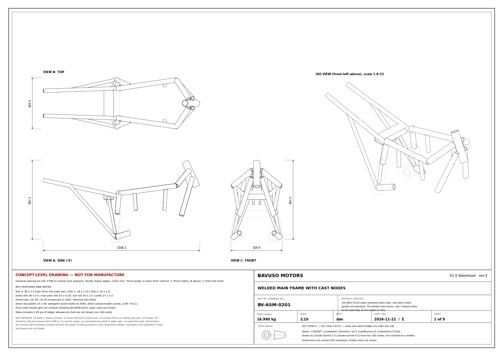
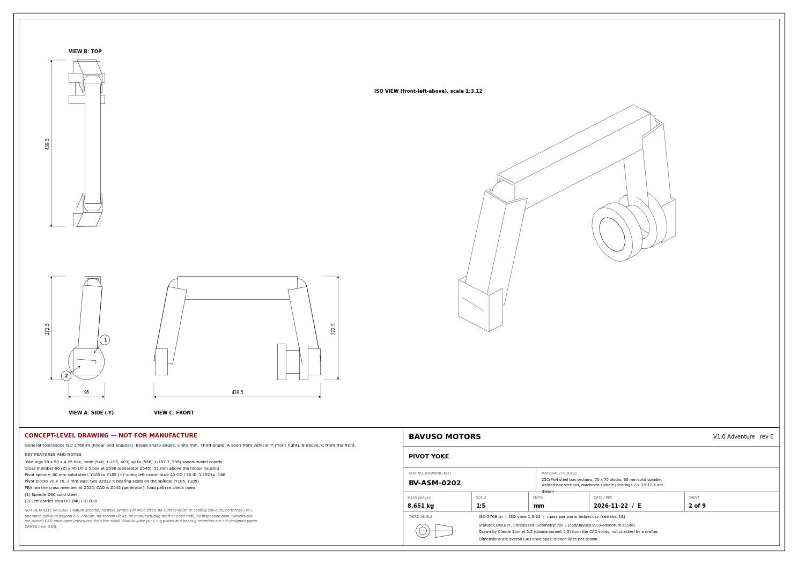
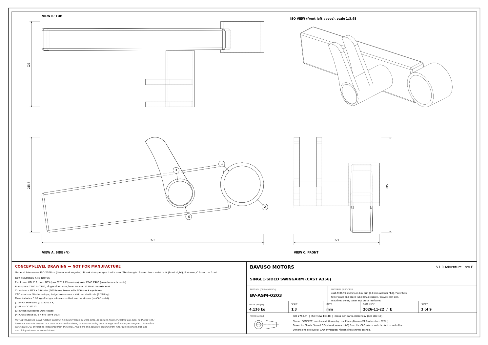
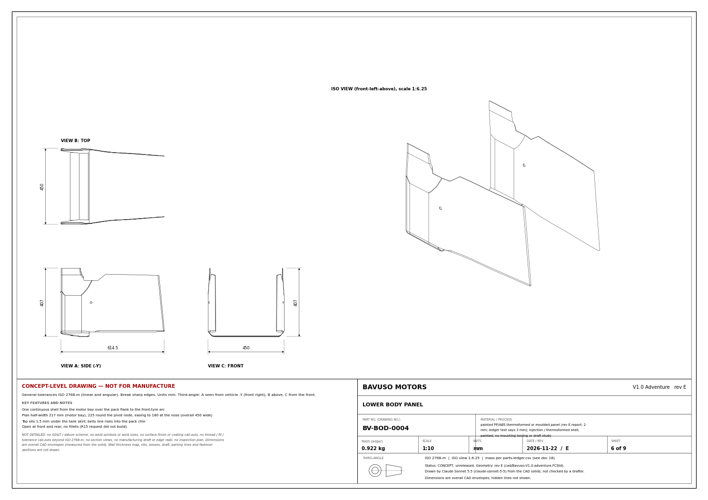
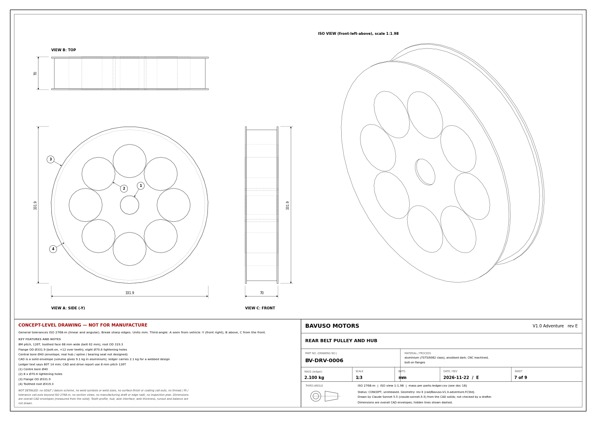
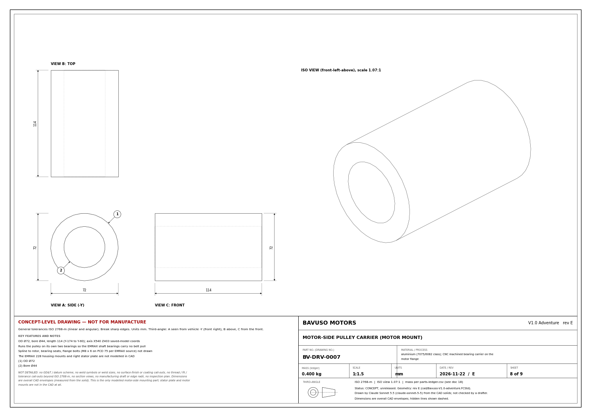
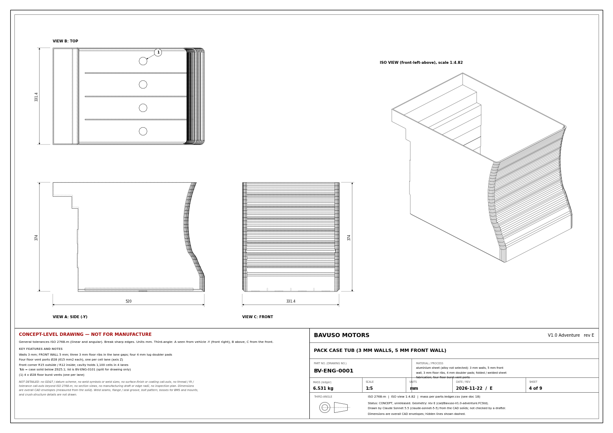
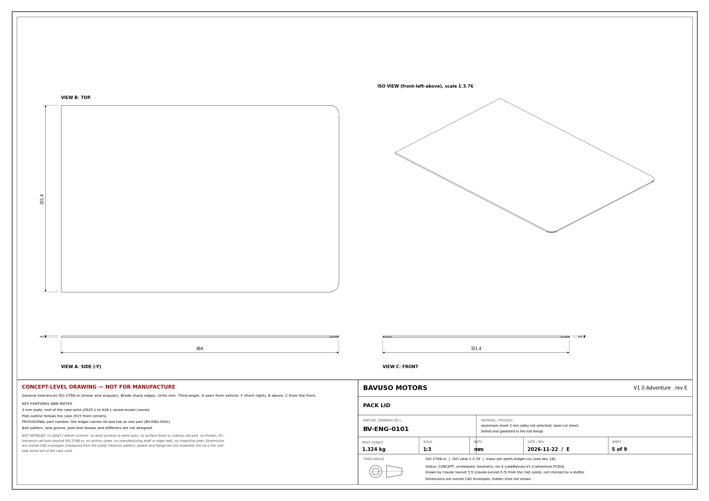
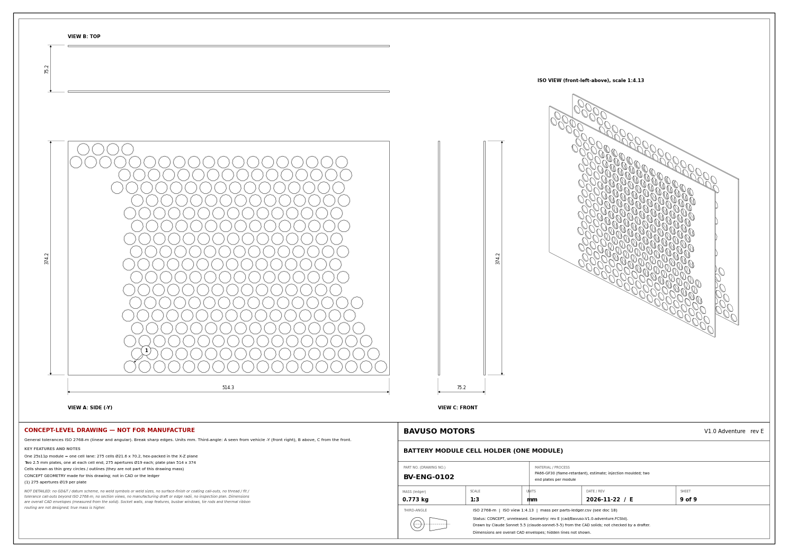
bom-v1-indented.csv (four levels: vehicle, systems, assemblies, parts); ties to the ledger at 257.9215 kg.| System | Description | kg |
|---|---|---|
| BV-SYS-0001 | Pack (cells, case, internals) | 108.00 |
| BV-SYS-0002 | Chassis (frame, pivot yoke, swingarm) | 31.33 |
| BV-SYS-0003 | Running gear (suspension, wheels, brakes, controls) | 43.23 |
| BV-SYS-0004 | Drive (motor, inverter, belt, pulleys) | 23.65 |
| BV-SYS-0005 | Electronics (charging, HV, BMS, LV, lamps, display) | 17.44 |
| BV-SYS-0006 | Body and protection | 14.45 |
| BV-SYS-0007 | Cooling | 6.90 |
| BV-SYS-0008 | Wiring, fasteners, fluids | 12.93 |
| Vehicle total (223 part lines, 36 assemblies) | 257.92 |
| File (program/) | Title | Status |
|---|---|---|
| 00-V1-final-spec.md | Bavuso V1: final spec sheet (single source of truth) | authority |
| 01-targets.md | Bavuso V1: the target point (weight, range, power, charging, price) | superseded in part |
| 02-hardware.md | Bavuso V1 hardware sourcing (light re-architecture) | superseded in part |
| 03-mass-ledger.md | Mass ledger audit and rebuild scheme | superseded in part |
| 04-cad-architecture.md | Bavuso V1 CAD architecture (rev C) | superseded in part |
| 05-ledger-system.md | Parts ledger and Gate A budget check | superseded in part |
| 06-drive-performance.md | Bavuso V1 drive and performance | |
| 07-electrical.md | Bavuso V1 electrical and charging architecture | |
| 08-cad-revD.md | Bavuso V1 CAD rev D: mass and look | superseded in part |
| 09-structures.md | Bavuso V1: structures (frame, single-sided swingarm, pack case) | superseded in part |
| 10-thermal.md | Bavuso V1 thermal design (rev C cooling concept) | |
| 11-cost.md | Bavuso V1 unit-cost model (final parts list, rev E) | |
| 12-compliance.md | Bavuso V1 compliance: standards matrix | superseded in part |
| 13-dfmea.md | Bavuso V1 DFMEA (design failure mode and effects analysis) | superseded in part |
| 14-dvpr.md | Bavuso V1 DVP&R (design verification plan and report) | superseded in part |
| 15-dynamics.md | Bavuso V1 vehicle dynamics (rev D) | |
| 16-cad-revE.md | Bavuso V1 CAD rev E: finished look, Round 2 structure, carbon wheels | |
| 17-aero.md | Bavuso V1 aerodynamics | pending |
| 18-bom-and-drawings.md | Bavuso V1 rev E: indented BOM and concept drawing pack | superseded in part |
| 19-independent-review.md | Bavuso V1: independent review before the final dossier | |
| BRIEF.md | Bavuso V1 final-spec program: shared brief for all agents | superseded in part |
| GATE-A-targets-locked.md | Gate A: V1 targets locked |